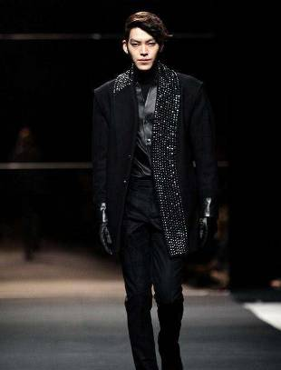

恭喜金宇彬抗击病魔取得胜利期待重回荧幕
 微博
微博
银幕中的他角色多变，现实生活中却有着和高冷的长相相反二等性格，他也会迷糊，会腹黑，不管怎么样早日恢复健康才是最主要的。
说起丑帅界的欧巴，小剧脑中第一个闪过的就是金宇彬的名字，初见金宇彬的确被他“恐龙”的长相吓到，《任意依恋》之前，小剧一直都觉得他有天生的“坏人”气质。但是这种气质越看越陷入其中，这叫什么？赢在了人格魅力上。就在鱼饼事业如日中天的时候，却传来了一条噩耗：金鱼饼患鼻咽癌，暂停所有演艺工作。
从5月开始，鱼饼开始了漫长的治疗，最近终于传来了好消息：金宇彬目前状态好了很多，可是他在治疗期间瘦了10公斤。
本人
高糊照片都挡不住优越的身材比例（188的身高不是白长的）优越的大长腿，穿衣超级有范.银幕中的他角色多变，现实生活中却有着和高冷的长相相反二等性格，他也会迷糊，会腹黑，大多数情况下都是一个温暖的男孩，不管怎么样，病魔来的突然，鱼饼欧巴早日恢复健康才是最主要的。